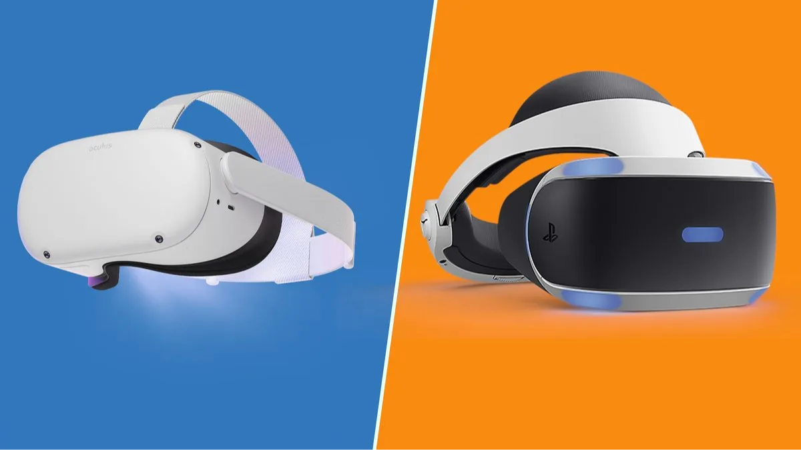

← Volver a Noticias

Sony gana el juicio colectivo de casi 2.000 millones de libras por los precios de PlayStation Store
Luiso · 18 de noviembre de 2026 · 3 min de lectura
Luiso · 18 de noviembre de 2026 · 3 min de lectura
Sony obtuvo una victoria judicial en el Reino Unido después de que el Tribunal de Apelación de la Competencia (Competition Appeal Tribunal) desestimara una demanda colectiva que cuestionaba las condiciones comerciales de PlayStation Store. El reclamo, presentado en representación de aproximadamente 12,2 millones de consumidores, sostenía que la compañía había abusado de su posición en el mercado al controlar la distribución digital de juegos y contenidos adicionales en sus consolas, lo que le habría permitido cobrar precios excesivos.
La acción legal, impulsada por Alex Neill Class Representative Limited, abarcaba compras digitales realizadas en consolas PlayStation durante un período que comenzó en agosto de 2016 para Inglaterra y Gales, y en agosto de 2017 para Escocia, hasta febrero de 2026. La compensación reclamada se estimaba en alrededor de 1.970 millones de libras, incluyendo intereses, una cifra cercana a los 2.000 millones que convirtió al caso en uno de los litigios de consumo más relevantes para el sector tecnológico británico.
Por qué se cuestionaba el modelo de PlayStation Store
La demanda sostenía que Sony había restringido la competencia al impedir que otras tiendas digitales distribuyeran juegos y contenidos para sus consolas. Según el planteo, el control exclusivo de PlayStation Store le permitía a la compañía imponer condiciones a editoras y desarrolladoras, además de mantener precios que los consumidores no podían evitar mediante otros canales digitales dentro del ecosistema PlayStation.
El reclamo también apuntaba a la comisión que Sony cobra por las ventas digitales y a la diferencia de precios entre las versiones digitales y físicas de determinados juegos. La acusación consideraba que estas prácticas perjudicaban a los consumidores y constituían un abuso de posición dominante bajo la legislación británica de competencia.
Sin embargo, el tribunal concluyó que la parte demandante no logró demostrar que Sony hubiera infringido las normas de competencia. Uno de los elementos centrales del fallo fue que no consiguió justificar adecuadamente la definición del mercado que utilizó para sostener sus acusaciones. Como no presentó una definición alternativa que permitiera evaluar el caso, el reclamo no pudo prosperar.
El tribunal también examinó otros aspectos de la demanda. Entre sus conclusiones, consideró que no se había demostrado que los márgenes de Sony fueran excesivos en los términos exigidos para acreditar una práctica de precios abusivos. El fallo fue unánime y desestimó la demanda en su totalidad.
El litigio todavía tendrá una instancia posterior
La resolución representa una victoria para Sony, que defendió su modelo de distribución y sostuvo que el funcionamiento integrado de su plataforma responde a inversiones en infraestructura, tecnología y seguridad. La compañía también argumentó durante el proceso que su sistema debe analizarse en el contexto de la competencia entre plataformas de consolas, y no como un mercado aislado de distribución digital.
De todos modos, el procedimiento todavía contempla una audiencia posterior, prevista para la semana del 14 de diciembre de 2026, en la que se tratarán cuestiones derivadas del fallo, incluidos los costos judiciales y eventuales solicitudes de autorización para apelar. Por lo tanto, aunque la demanda fue desestimada, todavía resta conocer si la parte demandante intentará llevar el caso a una instancia superior.
El resultado supone un respaldo judicial al modelo actual de PlayStation Store en el marco de este litigio específico. No significa, sin embargo, que el tribunal haya establecido que todos los precios de la tienda sean necesariamente competitivos o convenientes para los consumidores: lo que determinó fue que las acusaciones presentadas en esta demanda no consiguieron demostrar una infracción de la legislación vigente.
Un nuevo reporte asegura que Naughty Dog estaría desarrollando un nuevo episodio de Uncharted, que sería el próximo gran proyecto del estudio después de Intergalactic: The Heretic Prophet. La información apunta a la posible participación de Nathan Drake y su hija Cassie, aunque Sony todavía no anunció oficialmente el juego.
28 de septiembre de 2026Una patente presentada por Sony Interactive Entertainment describe un mando de PlayStation capaz de recibir información mediante tecnología NFC desde tarjetas, teléfonos y otros dispositivos. El documento contempla posibles usos para realizar compras, aunque no existe ningún anuncio de un nuevo mando que vaya a incorporar esta función.

8 de octubre de 2026Sony transfirió 43 patentes relacionadas con realidad virtual a Meta, en un acuerdo que contempla más de 400 registros a nivel mundial. El movimiento no confirma el abandono de PlayStation VR, pero representa una señal importante sobre el lugar que ocupa actualmente la realidad virtual dentro de la estrategia de la compañía.
Cargando comentarios…